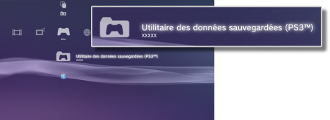

Jeu > Lecture d'un logiciel au format PlayStation®3 > Utilisation des données enregistrées
Utilisation des données enregistrées
Les données sauvegardées pour le logiciel au format PlayStation®3 sont mémorisées dans le stockage système. Les données sont affichées sous  (Utilitaire des données sauvegardées (PS3™)).
(Utilitaire des données sauvegardées (PS3™)).

Conseils
- Les données sauvegardées sont gérées séparément par chaque utilisateur. Si plusieurs utilisateurs sont définis sous
 (Utilisateurs), les éléments affichés sous (Utilitaire des données sauvegardées (PS3™)) varient en fonction de l'utilisateur connecté.
(Utilisateurs), les éléments affichés sous (Utilitaire des données sauvegardées (PS3™)) varient en fonction de l'utilisateur connecté. - Vous pouvez sélectionner une icône de données enregistrées et appuyez sur la touche
 pour trier ces données par date de mise à jour ou les regrouper par titre dans le menu qui s'affiche.
pour trier ces données par date de mise à jour ou les regrouper par titre dans le menu qui s'affiche.
Stockage des données sauvegardées sur le serveur PSNSM
Vous pouvez stocker sur un serveur PSNSM des données sauvegardées à l'aide d'un logiciel au format PlayStation®3 et les télécharger vers un autre système PlayStation®3 afin de continuer une partie commencée. Pour utiliser cette fonctionnalité, vous devez disposer d'un compte Sony Entertainment Network, ainsi que d'un abonnement au service PlayStation®Plus.
Stockage automatique des données sauvegardées
Vous pouvez activer l'enregistrement automatique et régulier dans le stockage en ligne des nouvelles données sauvegardées et de celles qui ont été récemment mises à jour.
Vous devez activer cette fonctionnalité pour chaque jeu.
1. |
Sous |
|---|---|
2. |
Sélectionnez [Téléchargement en amont automatique des données sauvegardées] et réglez cette option sur [Oui]. |
 (Jeu), sélectionnez le jeu dont vous souhaitez enregistrer les données sauvegardées et appuyez sur la touche
(Jeu), sélectionnez le jeu dont vous souhaitez enregistrer les données sauvegardées et appuyez sur la touche Conseils
- Les données sauvegardées qui sont mises à jour après l'activation du paramètre seront chargées automatiquement.
- Sous
 (Paramètres), réglez
(Paramètres), réglez  (Paramètres système) > [Mise à jour automatique] sur [Non] pour désactiver la mise à jour automatique des données sauvegardées.
(Paramètres système) > [Mise à jour automatique] sur [Non] pour désactiver la mise à jour automatique des données sauvegardées.
Stockage manuel des données sauvegardées
1. |
Sélectionnez |
|---|---|
2. |
Sélectionnez [Copier]. |
3. |
Sélectionnez [Stockage en ligne] comme destination de sauvegarde. |
Téléchargement des données sauvegardées du stockage en ligne vers le système PS3™
1. |
Sélectionnez |
|---|---|
2. |
Sélectionnez les données sauvegardées que vous souhaitez télécharger, puis appuyez sur la touche |
3. |
Sélectionnez [Copier]. |
Conseils
- La capacité de stockage maximale disponible est de 1 Go et il est possible de stocker jusqu'à 1000 éléments de données sauvegardées.
- Il n'est pas possible de stocker des données sauvegardées qui ne sont pas destinées à un logiciel au format PlayStation®3, PC Engine ou NEOGEO.
- Les données sauvegardées protégées contre la copie sont gérées de la manière suivante :
- - Téléchargement en amont vers le stockage en ligne : peut être effectué à tout moment.
- - Téléchargement des données sauvegardées à partir du stockage en ligne : lorsque des données sauvegardées protégées contre la copie sont téléchargées en amont ou à partir
du stockage en ligne, vous devez attendre au moins 24 heures avant de les télécharger de nouveau. - Vous ne pouvez pas utiliser le stockage en ligne pour certains jeux. Pour plus d'informations sur les jeux ou les services qui ne prennent pas en charge le stockage en ligne, sélectionnez ici.